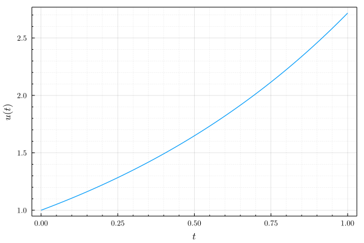
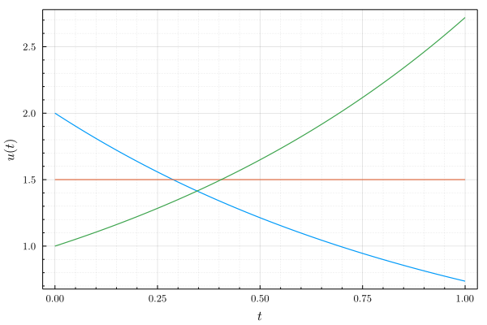
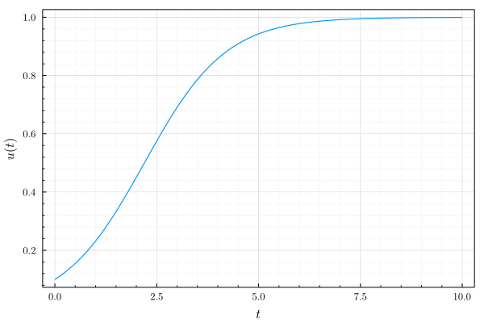
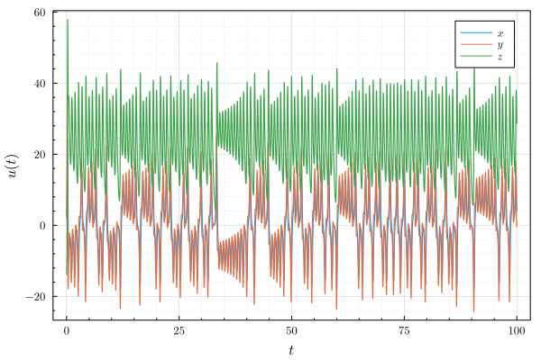

Examples
using Revise
using NSDERungeKutta
using Plots, LaTeXStrings
gr(fontfamily="Computer Modern", framestyle=:box, label="", tickdirection=:out)Dahlquist
u0 = 1.0
tspan = (0.0, 1.0)
problem = Dahlquist(u0, tspan)
finesolver = Euler(h=1e-3)
finesolution = solve(problem, finesolver)
plot(finesolution, xlabel=L"$t$", ylabel=L"$u(t)$")
# savefig("dahlquist1.svg")
using LinearAlgebra
u0 = [2.0, 1.5, 1.0]
tspan = (0.0, 1.0)
problem = Dahlquist(u0, tspan, λ=diagm([-1.0, 0.0, 1.0]))
finesolver = BackwardEuler(h=1e-3)
finesolution = solve(problem, finesolver)
plot(finesolution, xlabel=L"$t$", ylabel=L"$u(t)$")
# savefig("dahlquist2.svg")
Logistic
u0 = 0.1
tspan = (0.0, 10.0)
problem = Logistic(u0, tspan)
finesolver = RK4(h=1e-3)
finesolution = solve(problem, finesolver)
plot(finesolution, xlabel=L"$t$", ylabel=L"$u(t)$")
# savefig("logistic1.svg")
Lorenz
u0 = [2.0, 3.0, -14.0]
tspan = (0.0, 100.0)
problem = Lorenz(u0, tspan)
solver = F45(h=1e-3)
solution = solve(problem, solver)
plot(solution, label = [L"x" L"y" L"z"], xlabel=L"t", ylabel=L"$u(t)$")
# savefig("lorenz1.svg")